MAXimal
добавлено: 11 Jun 2008 11:25
редактировано: 14 Oct 2011 0:05
Содержание [скрыть]
Задача Иосифа
Условие задачи. Даны натуральные  и
и  . По кругу выписывают все натуральные числа от 1 до . Сначала отсчитывают -ое число, начиная с первого, и удаляют его. Затем от него отсчитывают чисел и -ое удаляют, и т.д. Процесс останавливается, когда остаётся одно число. Требуется найти это число.
. По кругу выписывают все натуральные числа от 1 до . Сначала отсчитывают -ое число, начиная с первого, и удаляют его. Затем от него отсчитывают чисел и -ое удаляют, и т.д. Процесс останавливается, когда остаётся одно число. Требуется найти это число.
Задача была поставлена Иосифом Флавием (Flavius Josephus) ещё в 1 веке (правда, в несколько более узкой формулировке: при 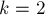).
Решать эту задачу можно моделированием. Простейшее моделирование будет работать  . Используя Дерево отрезков, можно произвести моделирование за
. Используя Дерево отрезков, можно произвести моделирование за  .
.
Решение за 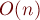
Попытаемся найти закономерность, выражающую ответ для задачи 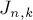 через решение предыдущих задач.
С помощью моделирования построим таблицу значений, например, такую:
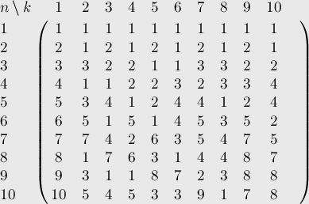
И здесь достаточно отчётливо видна следующая закономерность:
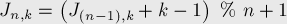
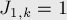
Здесь 1-индексация несколько портит элегантность формулы, если нумеровать позиции с нуля, то получится очень наглядная формула:
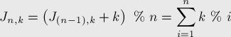
Итак, мы нашли решение задачи Иосифа, работающее за  операций.
операций.
Простая рекурсивная реализация (в 1-индексации):
int joseph (int n, int k) { return n>1 ? (joseph (n-1, k) + k - 1) % n + 1 : 1; }
Нерекурсивная форма:
int joseph (int n, int k) { int res = 0; for (int i=1; i<=n; ++i) res = (res + k) % i; return res + 1; }
Решение за 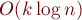
Для сравнительно небольших можно придумать более оптимальное решение, чем рассмотренное выше рекурсивное решение за  . Если небольшое, то даже интуитивно понятно, что тот алгоритм делает много лишних действий: серьёзные изменения происходят, только когда происходит взятие по модулю , а до этого момента алгоритм просто несколько раз прибавляет к ответу число . Соответственно, можно избавиться от этих ненужных шагов,
. Если небольшое, то даже интуитивно понятно, что тот алгоритм делает много лишних действий: серьёзные изменения происходят, только когда происходит взятие по модулю , а до этого момента алгоритм просто несколько раз прибавляет к ответу число . Соответственно, можно избавиться от этих ненужных шагов,
Небольшая возникающая при этом сложность заключается в том, что после удаления этих чисел у нас получится задача с меньшим , но стартовой позицией не в первом числе, а где-то в другом месте. Поэтому, вызвав рекурсивно себя от задачи с новым , мы затем должны аккуратно перевести результат в нашу систему нумерации из его собственной.
Также отдельно надо разбирать случай, когда станет меньше — в этом случае вышеописанная оптимизация выродится в бесконечный цикл.
Реализация (для удобства в 0-индексации):
int joseph (int n, int k) { if (n == 1) return 0; if (k == 1) return n-1; if (k > n) return (joseph (n-1, k) + k) % n; int cnt = n / k; int res = joseph (n - cnt, k); res -= n % k; if (res < 0) res += n; else res += res / (k - 1); return res; }
Оценим асимптотику этого алгоритма. Сразу заметим, что случай 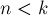 разбирается у нас старым решением, которое отработает в данном случае за 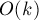. Теперь рассмотрим сам алгоритм. Фактически, на каждой его итерации вместо чисел мы получаем примерно 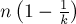 чисел, поэтому общее число  итераций алгоритма примерно можно найти из уравнения:
итераций алгоритма примерно можно найти из уравнения:
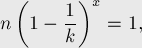
логарифмируя его, получаем: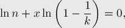
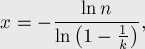
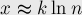
Таким образом, асимптотика алгоритма действительно 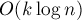.
Аналитическое решение для 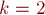
В этом частном случае (в котором и была поставлена эта задача Иосифом Флавием) задача решается значительно проще.
В случае чётного получаем, что будут вычеркнуты все чётные числа, а потом останется задача для 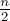, тогда ответ для будет получаться из ответа для умножением на два и вычитанием единицы (за счёт сдвига позиций):
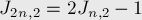
Аналогично, в случае нечётного будут вычеркнуты все чётные числа, затем первое число, и останется задача для 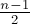, и с учётом сдвига позиций получаем вторую формулу:
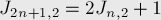
При реализации можно непосредственно использовать эту рекуррентную зависимость. Можно эту закономерность перевести в другую форму: 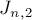 представляют собой последовательность всех нечётных чисел, "перезапускающуюся" с единицы всякий раз, когда оказывается степенью двойки. Это можно записать и в виде одной формулы:
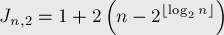
Аналитическое решение для 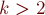2">
Несмотря на простой вид задачи и большое количество статей по этой и смежным задачам, простого аналитического представления решения задачи Иосифа до сих пор не найдено. Для небольших выведены некоторые формулы, но, по-видимому, все они трудноприменимы на практике (например, см. Halbeisen, Hungerbuhler "The Josephus Problem" и Odlyzko, Wilf "Functional iteration and the Josephus problem").